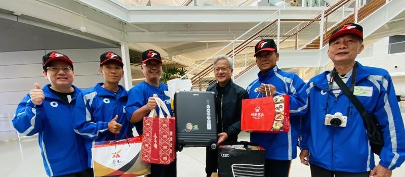
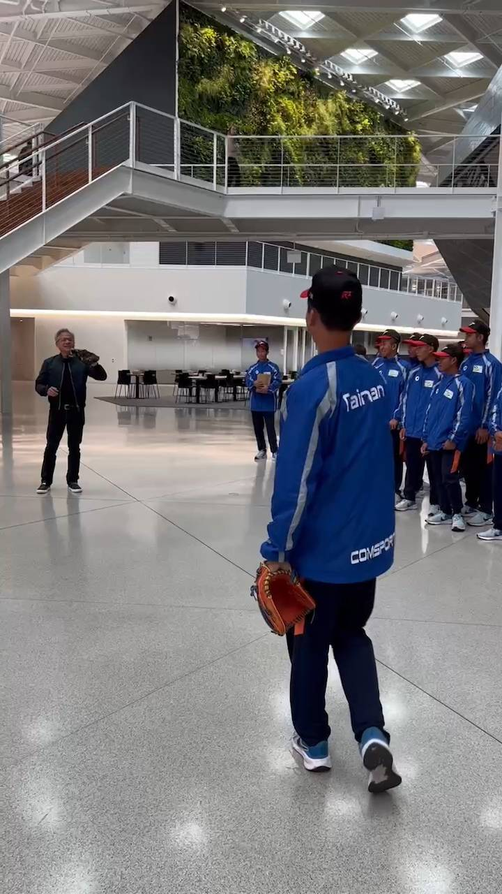

美国小马联盟小马级世界青少棒锦标赛8月9日至14日将在美国宾州华盛顿市开打，台南代表队已来美，8月5日上午参访辉达总部，首席执行官黄仁勋特别利用空档接待来自故乡台南的球员。黄仁勋展现亲和力，不论是拍照、签名来者不拒，更即兴在总部大厅与球员投接球。
总教练蔡清濬表示，黄仁勋特别准备当地丰盛美食招待代表队，全程使用国台语与球员聊天，并鼓励代表队全力以赴，享受比赛过程。
黄伟今感谢黄仁勋在公务繁忙之际，仍热情拨冗接待故乡的囡仔，听闻黄仁勋酷爱家乡美食，市府也特别准备台南好礼虱目鱼拌面礼盒，诚挚欢迎他来台南走走，品尝在地美味小吃。另，台南在地的万国通路行李箱也特别制作Q版黄仁勋专属行李箱，转达台南乡亲的心意。
体育局长陈良干说，教练以及选手们每天持续辛勤的训练，相信终将获得丰硕果实，期许小将们在小马杯世界赛发挥超群实力，在国际棒球舞台写下属于台台的一页。南市代表队的第1场赛事将于8月11日凌晨5时开打，欢迎大家一同加油打气，祝福代表队旗开得胜，一路过关斩将，带着金杯返国。
